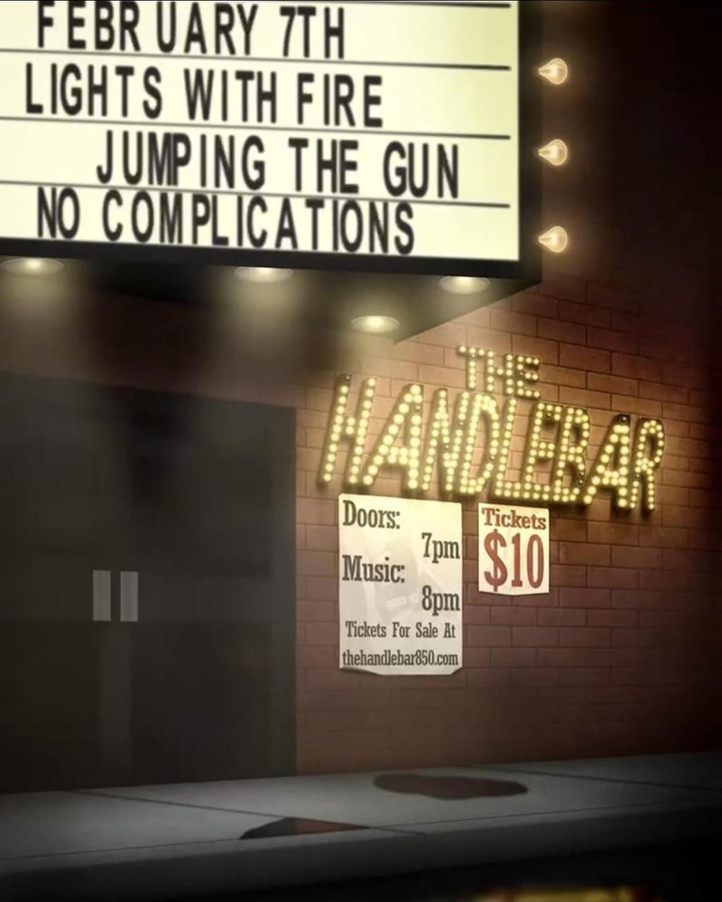

 FRI FEB 7from the archive Jumping the Gun, No Complications, Lights, Fire jumping the gunno complicationslightsfire The Handlebar · 319 N Tarragona St, Pensacola, FL directionsshare this flyerthe archive ↗